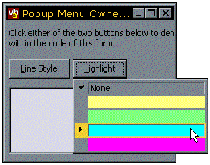

VB5 OwnerDraw Menus Demonstration (22K)
VB5 OwnerDraw Menus Demonstration (22K)
 VB6 OwnerDraw Menus Demonstration (18K)
VB6 OwnerDraw Menus Demonstration (18K)
 13 Feb 1999
13 Feb 1999
First Posted

Owner-Draw Pop-up Menus
Creating a custom colour and line picker using Owner-Draw Menus
This project provides sample code for creating completely owner-drawn pop-up menu items using the PopupMenu ActiveX DLL. If you want to create a drop-down list of items from your control, and the number of items will fit onto the screen, then using this DLL to manage all the drop-down functions except drawing the items themselves can make the task easier.
This project demonstrates two customised menu types:
- A line style picker
- A colour picker
Owner-Drawn Menu Items
Owner drawing menu items involves the following:
- Setting the OwnerDraw property to True for the menu items you want to draw yourself.
- Responding to the MeasureItem event.
This is fired just before a menu item is going to be displayed and is used to determine the width and height of the menu items. The DLL will automatically calculate the size of the menu item based on the text entered for the item, however if your item is graphical you may well want to override the default width and height with your own values. The overall width of the drop-down menu will automatically set to the width of the largest item in the menu. Each item can have any height you want. The parameters to this method are:- lMenuIndex: The menu item which should be measured (read-only).
- lWidth: The width of the menu item in pixels (read-write).
- lHeight: The height of the menu item in pixels (read-write).
- Responding to the DrawItem event.
This event is fired whenever a menu item needs to be redrawn (for example, when it is first shown, or when it needs to be highlighed or un-highlighted). This method passes you the index of the item to be drawn, the device context to draw on, the bounding rectangle of the item and various flags telling you the state of the item, as follows:- hdc : handle of the device context to draw on (read-only).
- lMenuIndex: the menu item which should be drawn (read-only).
- lLeft: the left point of the menu item to be drawn in the DC, in pixels (read-write)
- lTop: the top point.
- lRight: the right point.
- lBottom: the bottom point.
- bSelected: Whether the item is selected (read-only)
- bChecked: Whether the item is checked (read-only)
- bDisabled: Whether the item is disabled (read-only)
- bDoDefault: A boolean flag indicating whether the default drawing method should be done after you have finished handling the event. Set to True to perform the default drawing method. See Start Menu/ICQ Style Pop-up Menus for a demonstration of how to use this.
Note that there is no problem mixing owner-draw and standard items in the same menu. So if the way separators draw in the default menu suits your owner-draw menu, you just leave the OwnerDraw property False for any separators.